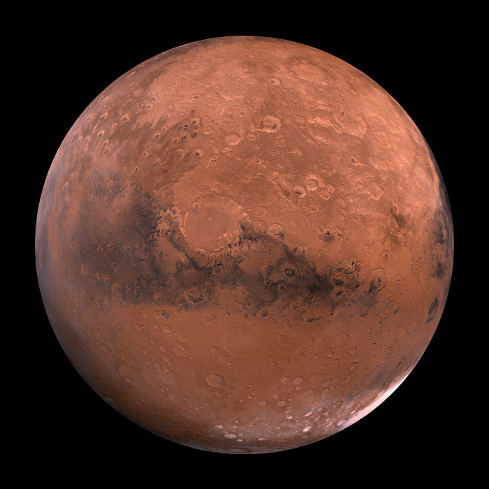

Om Mars
Mars er den fjerde planet i solsystemet og er kendt som den røde planet på grund af dens røde farve, som skyldes jern(III)-oksider på dens overflade.
Mars' Atmosfære
Mars has a thin atmosphere, primarily composed of carbon dioxide (CO2), with traces of nitrogen and argon. The atmosphere is about 100 times thinner than Earth's.
Mars' Overflade
Overfladen af Mars er dækket af støv og sten, og den har mange vulkaner, dale og polare iskapper. Den mest kendte vulkan er Olympus Mons, som er den højeste vulkan i solsystemet.